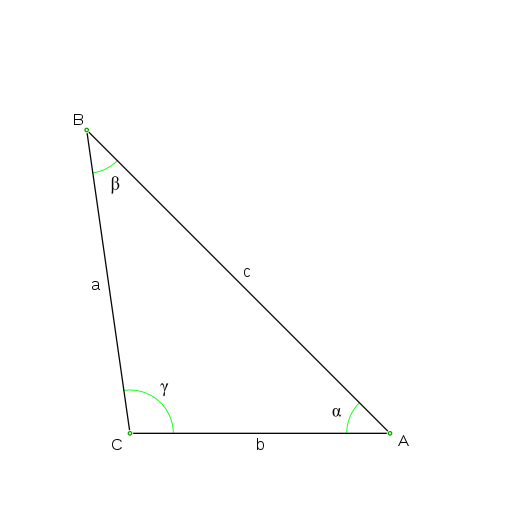
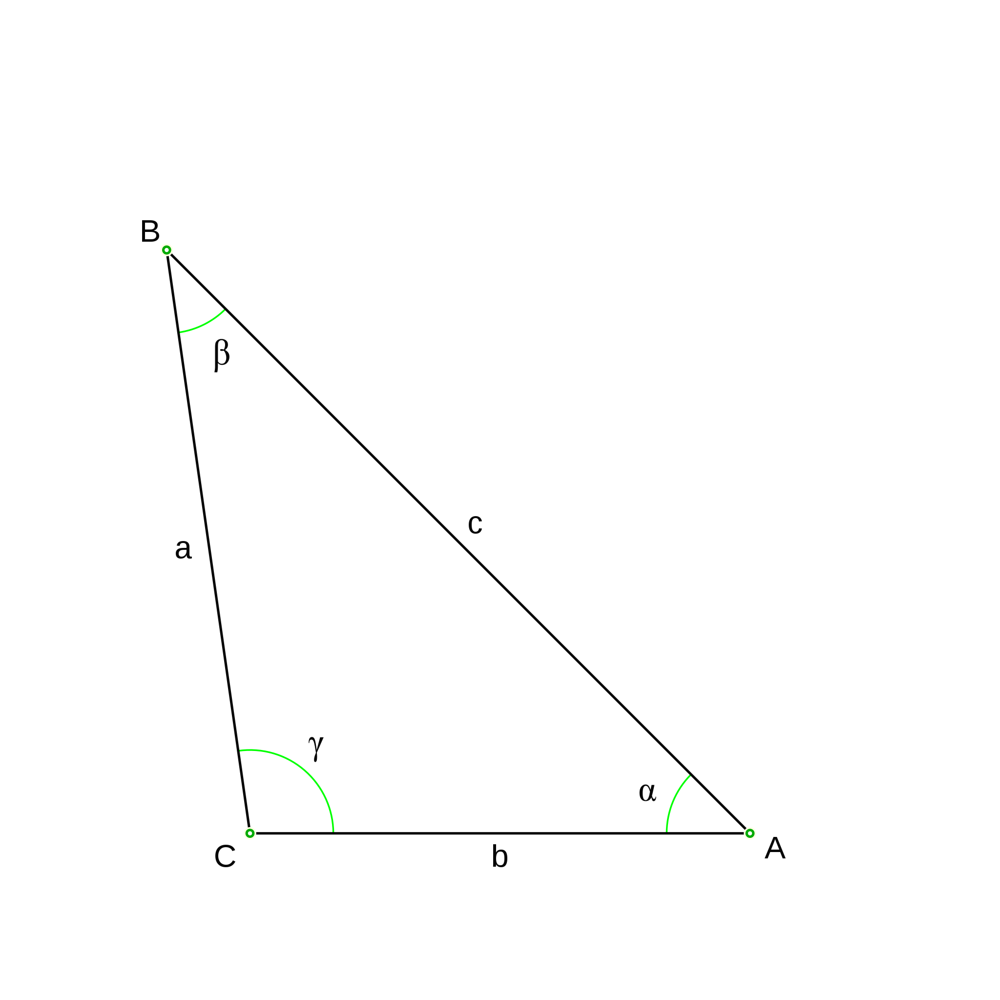
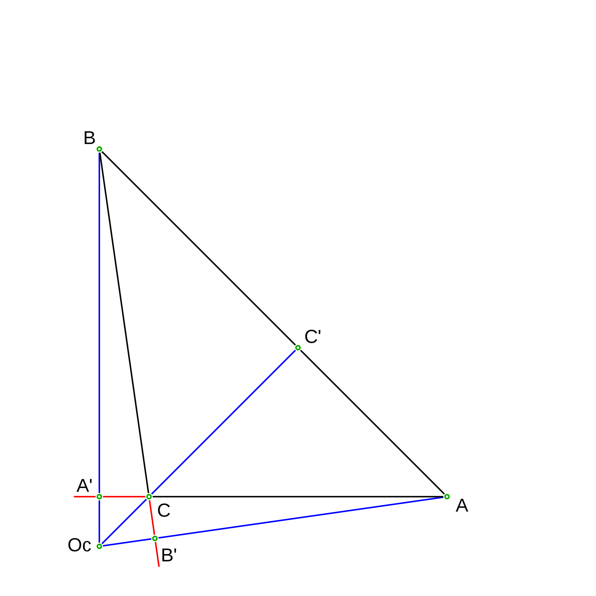

El triángulo obtusángulo se caracteriza por tener uno de sus ángulos interiores obtuso, eso quiere decir que el ángulo es mayor a 90°, por lo tanto, los ángulos internos restantes son menores a 90°.

Existen triángulos que cuentan con las características del triángulo obtusángulos y también presentan otras características que representa al otro tipo de triángulo.

